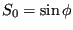
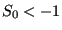

Next: Sluice Gate Up: Fluid Section Types: Open Previous: Fluid Section Types: Open Contents
The straight channel is characterized by a trapezoidal cross section with
constant width  and trapezoidal angle
and trapezoidal angle  . This is illustrated in Figure
120. The following constants have to be specified on the
line beneath the *FLUID SECTION,TYPE=CHANNEL STRAIGHT card:
. This is illustrated in Figure
120. The following constants have to be specified on the
line beneath the *FLUID SECTION,TYPE=CHANNEL STRAIGHT card:

(if
the slope is calculated from the coordinates of the end nodes belonging to the element)
Example files: channel1, chanson1.